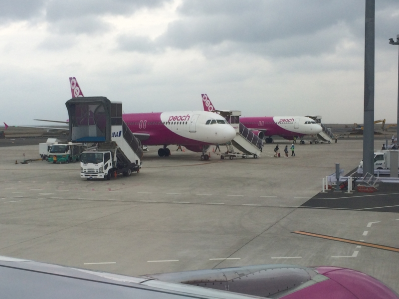
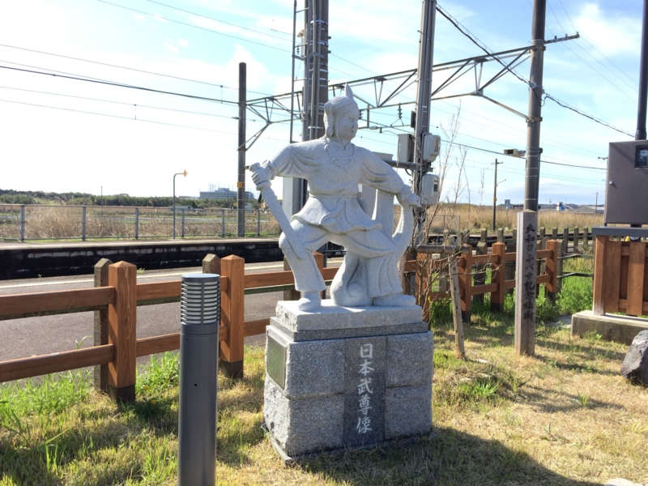
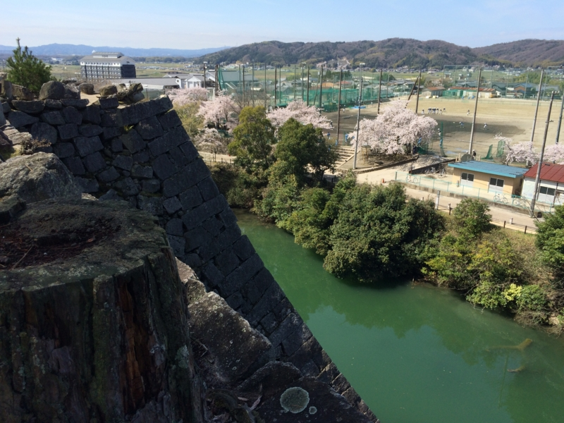
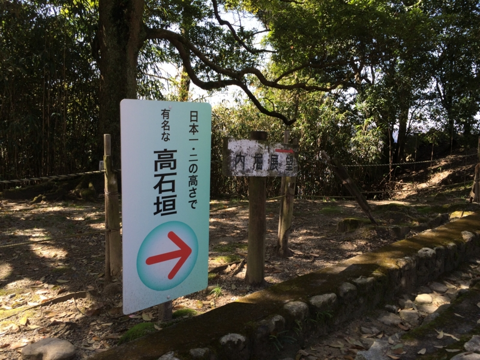
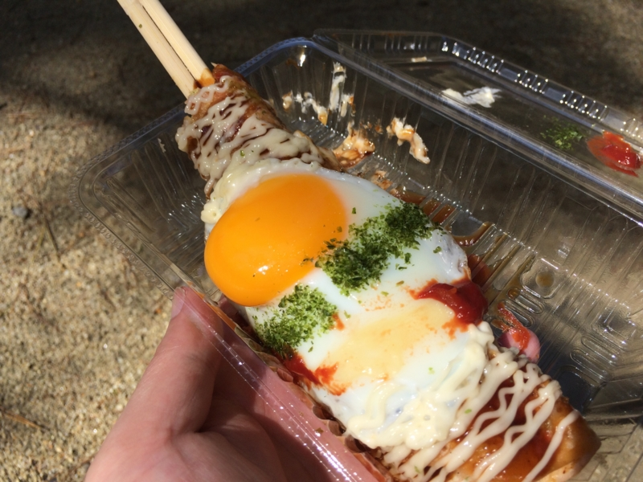
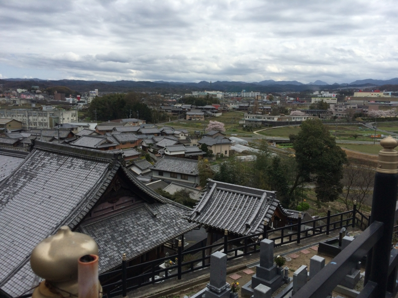

バイク：鈴鹿から伊賀上野・名張
公開日：

歩兵部隊を卒業した（バイクを買ったの意）ので、ナンバー登録してきた - だるろぐ の続き。今回はヤフオクで買ったバイクを引き取りに行くために、松山から鈴鹿まで。陸送してもよいのだけど、今年はまだ墓参りをしていない＆関西でいろいろやりたいことがあったので、あえて自走で引き取りに行った。途中でトラブルが発生するのは怖かったが、まぁ、相手と密に連絡が取れていたのでイケるだろうと判断。念のため JAF に入っておいたが、杞憂だった。
4月3日（金）の朝、松山を出て、飛行機で関空、そこから南海＆近鉄で鈴鹿へ向かう（柳なので柳駅行ってきた。 - だるろぐ）。青山を過ぎたあたりで小雨が降ってきて、霧だか雲がスゴい。その日中に墓参りを済ませてフェリーに乗って帰るつもりだったが、速攻断念して、鈴鹿で1泊することにした。天気予報を見ると、 土曜日は曇り、日曜日は雨の予報。土曜日をフル活用して、あちこち回ることにする。前の日に『きんいろモザイク』のニコニコ動画一挙放送みてしまったせいで寝付けず、徹夜状態だったので、午後3時半ごろ鈴鹿のルートインに入ると、そのまま次の朝まで爆睡してしまった。

4月4日（土）、朝9時ごろ鈴鹿を出発。少し薄暗いが、晴れと言えば晴れといった天気。ヤマカンで走ったのでちょっと意味わかんないところに出たが、国道一号線に出てからは知ってる道。名阪国道にあがって、快調に飛ばす。
名阪国道（国道25号線）は亀山と天理を結ぶ自動車専用道路で、聞くところによると、天理教の陰謀によりタダになったらしい。それはまぁ、いいのだけど、おかげでお金のかかるトンネルをできるだけ避けた、アップダウンの多いくねくね道になっている。あと、料金がかからないせいかトラックの往来が多く、上り坂で追い越し車線をふさいで渋滞をつくったり、轍を大量生産したりしている。最悪、轍にたまった水が凍結していたりするので、冬季はとくに注意をしなければならない道だ。実際、だる父も一度五ヶ谷でスリップ事故を起こして危うく死にかけている。あと、たまに覆面パトカーがいる。こっちはだる母が血祭りにあげられたことがある。
（まぁ、マジな話、割と危ないのでトラックに近寄らない方がいい）
轍を避けて道の真ん中をどんどこ、ぽこぽこ進むと、やがて上野ICに到着。名張へはここで降りて左へ折れればよいのだけど、出るときになって気が変わり、右に折れて伊賀上野へ向かった。伊賀上野城は、丁度桜が咲いていて綺麗であろう。伊賀鉄道の踏切を越え、西大手の交差点で右に曲がると、上野公園だ。

思った通りの絶景やわ。この天守は、戦前にとある資産家が私財で建てたという。奇特な方もいるものだ。
本丸の広場には保育園児が集まって、「いが☆グリオ」体操？をしていて可愛らしかった。
「いが☆グリオ」は三重県伊賀市のゆるキャラであるらしい。ゆるキャラでありながら、かなり猟奇的な雰囲気を漂わせている。ほかにも忍者っぽいキャラなどもいた。
ちなみに、伊賀市は平成の大合併の折、近鉄の後押しを受けて急成長を遂げる名張市（現在は人口減少中）の脅威に対抗するため、伊賀上野市・青山町などの雑魚市町村をかき集めて作られた。これにより旧伊賀国は伊賀市と名張市という2つの市に分かたれ、血で血を洗う抗争になっているという。おそらく「いが☆グリオ」はその急先鋒と言える存在だと察せられるが……我が名張にいたご当地ヒーローはどうなったのだろうか。

伊賀上野城と言えば、やたら高い石垣。柵もなにもないので落ちてしまいやしないか心配になるが、逆に怖くて子どもも近寄るのを躊躇するのであろう、落ちたという話はあまり聞かない。韓非子がこれを聞いたらドヤ顔になりそうだ。

この石垣、むかしは「日本一」だと習った（忍者がのぼってこられないように、勾配もすごい！ とか）のだけど、実は丸亀城の方が高いらしい。そのため、看板もむかしより若干控えめな表現になっている。“ウソではないがホントではない”というこのレトリック、積極的に学んでいきたい。それにしても、藤堂高虎って石垣の高さにこだわりでもあったのだろうか。まぁ、そりゃ高いに越したことはないケド。

朝ごはんを食べてなかったので、屋台で“はし焼き”というのを食べた。300円ぐらいかな？ お箸にお好み焼きを巻きつけて、食べやすくした感じ。美味しかったので、箸を舐め舐めしてしまった。

お腹も落ち着いたので、再びバイクのエンジンに火を入れて、今度は南下。名張で、だるやなぎ家代々のお墓を掃除した。ここからの景色は、割と好き。おじいちゃん・おばあちゃんにいまだ嫁がもらえないことを詫びつつ、念仏をあげた。やべぇ、ちょっと雲が出てきたよ。雨降る前に大阪行けるかなぁ。
次回、奈良へ行かなんならん、に続く。